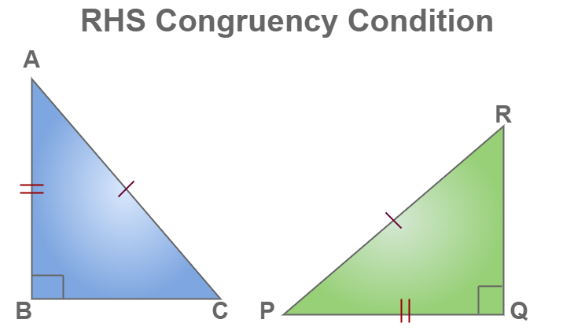
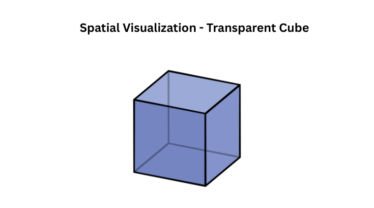
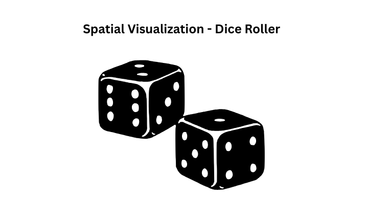
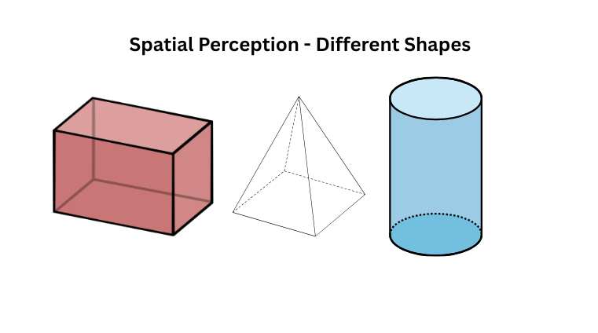

Side-Side-Side (SSS) Congruent Triangles
When two triangles have all three sides equal, they are called SSS (Side-Side-Side) Congruent Triangles.
This means if the three sides of one triangle are the same length as the three sides of another triangle, the triangles are congruent.
Congruent triangles have the same shape and size.
When triangles are congruent, their matching angles are also equal.
For example, if △ABC and △DEF have AB = DE, BC = EF, and AC = DF,
then the triangles are congruent (△ABC ≅ △DEF), and their angles are equal:
∠A = ∠D, ∠B = ∠E, and ∠C = ∠F.
Scan the QR code to directly view the 3D models in your AR camera and explore these mathematical shapes in your own space!
Side-Angle-Side (SAS) Congruent Triangles
When two triangles have two sides equal and the included angle (the angle between the two sides) also equal,
they are called SAS (Side-Angle-Side) Congruent Triangles.
This means if the two sides and the angle between them in one triangle are the same as the two sides and the included angle in another triangle,
the triangles are congruent.
For example, if △ABC and △DEF have AB = DE, ∠B = ∠E, and BC = EF, then the triangles are congruent (△ABC ≅ △DEF).
Congruent triangles have the same size and shape, so their matching angles and sides are also equal.
Scan the QR code to directly view the 3D models in your AR camera and explore these mathematical shapes in your own space!
Angle-Side-Angle (ASA) Congruent Triangles
When two triangles have two angles equal and the side between them also equal, they are called ASA (Angle-Side-Angle) Congruent Triangles.
This means if the two angles and the side between them in one triangle are the same as the two angles and the included side in another triangle,
the triangles are congruent.
For example, if △ABC and △DEF have ∠A = ∠D, AB = DE, and ∠B = ∠E, then the triangles are congruent (△ABC ≅ △DEF).
Congruent triangles have the same size and shape, so their matching sides and angles are also equal.
Scan the QR code to directly view the 3D models in your AR camera and explore these mathematical shapes in your own space!
Right angle - Hypotenuse - Side (RHS) Congruent Triangles
When two right-angled triangles have their hypotenuse and one side equal, they are called RHS (Right angle - Hypotenuse - Side) Congruent Triangles.
This means if both triangles have a right angle (∠90°), their hypotenuse (the longest side) is equal, and one other side is also equal, then the triangles are congruent.
For example, if △ABC and △DEF are right-angled triangles with ∠B = ∠E = 90°, AC = DF (hypotenuse), and AB = DE (one side), then the triangles are congruent (△ABC ≅ △DEF).
Congruent triangles have the same size and shape, so all their sides and angles are also equal.
Scan the QR code to directly view the 3D models in your AR camera and explore these mathematical shapes in your own space!

Spatial Visualization - Transparent Cube Visualization
Spatial visualization is the ability to mentally manipulate 2D and 3D shapes.
It involves three key skills: mental rotation (imagining how objects look when turned),
spatial perception (understanding where objects are positioned in space), and
spatial relationships (recognizing how different parts of a shape connect to each other).
This skill is crucial for geometry, engineering, architecture, and 3D problem-solving.
For example, when viewing the transparent cube in AR, you can observe how its 6 faces, 12 edges, and 8 vertices
appear from different angles. Try to predict what the cube will look like from the back while viewing it from the front of
this exercises your spatial visualization ability. Understanding how 3D objects appear from various perspectives
helps in solving geometry problems involving volume, surface area, and cross-sections.
Scan the QR code to directly view the 3D models in your AR camera and explore these mathematical shapes in your own space!

Spatial Visualization - Dice Roller Visualization
Spatial visualization is the ability to mentally manipulate 2D and 3D shapes.
It involves three key skills: mental rotation (imagining how objects look when turned),
spatial perception (understanding where objects are positioned in space), and
spatial relationships (recognizing how different parts of a shape connect to each other).
This skill is crucial for geometry, engineering, architecture, and 3D problem-solving.
A standard dice is a cube with numbers 1 to 6 on its faces, where opposite faces always add up to 7
(1 opposite to 6, 2 opposite to 5, 3 opposite to 4). When viewing the dice in AR, try to predict
which number is on the bottom face by looking at the top face this exercises your spatial visualization ability.
Understanding dice orientation helps in probability problems and games, where you need to mentally rotate
the dice to figure out all possible outcomes.
Scan the QR code to directly view the 3D models in your AR camera and explore these mathematical shapes in your own space!

Spatial Perception - Different Shapes
Spatial Perception is the ability to recognize differences in size, shape, distance, and depth.
It involves comparing and contrasting objects accurately, understanding how shapes relate to each other,
and recognizing patterns in geometric forms. This skill is essential for geometry, design, and real-world problem-solving.
When viewing different 3D shapes in AR, you can compare their properties: a cube has 6 equal square faces,
a cylinder has 2 circular faces and 1 curved surface, a sphere has no edges or vertices,
and a pyramid has a polygon base with triangular faces meeting at an apex.
Try to identify which shapes have more faces, edges, or vertices, this exercises your spatial perception ability.
Understanding these differences helps in calculating volume, surface area, and recognizing shapes in everyday objects.
Scan the QR code to directly view the 3D models in your AR camera and explore these mathematical shapes in your own space!

Mental Rotation - L Shaped
Mental Rotation is the ability to mentally turn and manipulate 3D objects in the mind.
It involves imagining how an object would look when rotated by different angles (90°, 180°, 270°)
around different axes (x, y, or z). This skill is important for judging if shapes are the same or different
after being rotated, and is essential for geometry, engineering, and spatial problem-solving.
The L-shaped block is a classic example used to test mental rotation skills. When viewing the L-shape in AR,
try to mentally rotate it by 90° and predict what it will look like this exercises your mental rotation ability.
Notice that rotating an L-shape is different from reflecting (flipping) it: rotation keeps the shape's
orientation (like turning a key), while reflection creates a mirror image (like seeing your reflection).
Understanding this difference helps distinguish between congruent shapes (same after rotation) and
mirror images (same after reflection).
Scan the QR code to directly view the 3D models in your AR camera and explore these mathematical shapes in your own space!